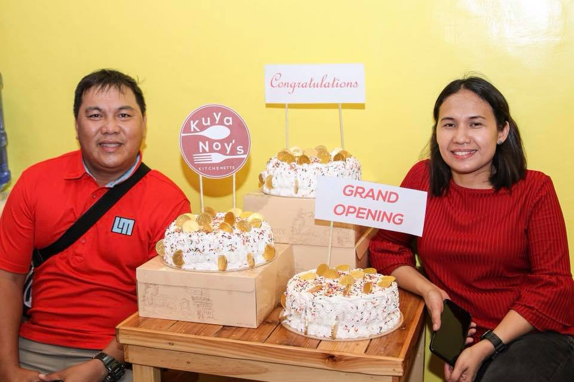

The “Noy’s Kitchen” was a family restaurant founded by Rebecca Salilig, she started this restaurant because of her childhood dream of creating one. The sole objective of this restaurant was to encourage families to come one out together to eat as one and bringing them closer at each other.
The Noy’s kitchenette store is located at Blk 140 lot 5 AFP Housing Bulihan Silng, Philippines where it is staffed by 1 chef and 2 waiters. We specialize in selling foods such as Pizza, Rice Meals and also desserts like mini cake with different beverages. The store is privately held by our family with an objective of helping family’s bond with each other and spend more time together. And lastly, we take far seriously the cleanliness and hygienic of our store and facilities
|  |  |